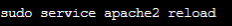
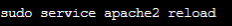

1. PAUSOA
Hasteko, sistema eragilea eguneratu beharko dugu eta hori egin eta gero segidan apache instalatu beharko dugu. Dependetziak konfirmatu eta gero instalazioa bukatzerakoan localhost-era sartu beharko gara ikusteko ea ondo instalatu den. Esan beharra dago gure dokukentuak /var/www/html karpetan gordetzen direla.
2. PAUSOA
Instalatuta daukagunean, Apacheko prozesuak limitatu beharko ditugu. Hori egin ahal izateko, Apacheko modulu bat instalatu beharko dugu MPM Prefolk izenekoa. Berriz aktualizatu eta instalazioarekin hasiko gara.
3. PAUSOA
Hori egiterakoan, konfigurazio fitxategia editatu beharkodugu, hau da, ‘apache2.conf’ fitxategian hau jarri behar dugu. Eta hori egin eta gero berriz ere Apache berrabiarazi beharko dugu.
4. PAUSOA
Hori egin eta gero, zerbitzari birtualak konfiguratzen hasi beharko gara. Hasteko, orrialdearen konfigurazio fitxategia editatu beharko dugu. Hemen, petizioei zein orrialde erakutsi beharko dien jarriko diogu.
5. PAUSOA
Adibidez, fitxategi hori irekitzen dugunean honelako zerbait agertuko zaigu, hemen gure datuak sartuko ditugu. Gure kasuan honelako datuak izango ditu, gure web orrialdea honela deituko delako.
6. PAUSOA
Hori egin eta gero, gure orrialdea sortu beharko dugu, gurea ‘www.euskaraDaw.com’ deituko da eta bertan gure index.html-a jarriko diogu. Baina, ez badaukagu direktoria sortuta ezer ere ez sortuta, hau egin beharko zen.
 

7. PAUSOA
Amaitzeko, gure index.html-a lehen sortutako direktorioan sartu beharko dugu, hórrela gure web orrialdera sartzerakoan orrialde hori agertuko zaio bezeroari. Apache balidatzeko komando hau egin eta gero berrabirazi egin beharko dugu zerbitzua.